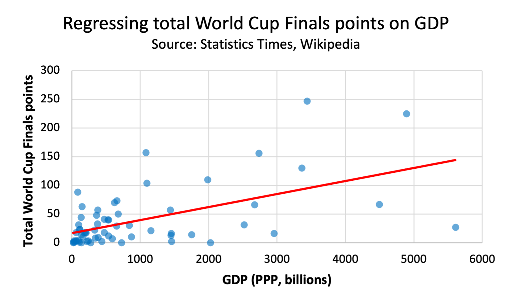

Danny Supple | 1941103
Since the inaugural competition of the FIFA World Cup finals in 1930, there have been 22 tournaments with 80 different participating teams, 8 of which have claimed the coveted trophy. We often observe the same handful of countries progressing to the later rounds, without questioning the historical reasons behind their repeated footballing success. This project seeks to understand whether there are economics factors at play or whether the teams we see are a random collection of countries connected through their footballing heritage.
This bar chart shows the total points obtained by each country in all the World Cup finals tournaments, dating back to 1930. There is a selector which allows you to view the record of each continent individually. As the World Cup is a combination of league and knockout games, this project will be using a consistent points system of: win=3, draw=1, loss=0.
Chart 1
From the chart above we observe that European teams have historically dominated the tournaments, however 3 of the top 10 spots are South American countries, with Brazil accumulating the highest total. The data for the above chart was scraped from wikipedia using
One of the main reasons for South American success appears to be how heavily the game in ingrained into society, which could be explained by colonisation. Below you can see a chloropleth map displaying World Cup appearances, next to a map which highlights the 19th century Spanish and Portugese colonies. In addition to the South American countries, we also observe the same pattern with parts of North Africa along with Central and North America.
World Cup finals appearances
Chart 2
Spanish and Portugese colonies
This scatter chart contains a selector which enables us to compare the correlation between World Cup success and five variables: GDP (PPP), GDP per capita, Population, Government spending as a percentage of GDP and the Voice and Accountability index (a measure of political freedoms within a society).
Chart 3
From this chart we observe little correlation between average points and most of the variables, with GDP - using the Purchasing Power Parity (PPP) - having the highest. When I ran regressions of average points per game on all 5 of these variables, GDP (PPP) had an R squared with the highest magnitude (0.23). The other variables had a negligible correlation, which could be down to the fact each country is competing within their continent.
A closer look at the World Cup qualifying record of European countries
This bubble chart shows the qualifying record for all European countries since 1930, compared with both their GDP and population.
Chart 4
This scatter chart allows us to compare the same 5 variables with total World Cup finals points. I believe this is a more accurate metric to measure historical World Cup success. The reason I did not use average points in finals is because the results could have been skewed by nations who were successful in small number of tournaments, as opposed to consistent success throughout history.
Chart 5
I also ran regressions on each of these variables, with GDP, GDP per capita and population all having an R squared of roughly 0.30. These relationships are expected as a country with more people have a higher a chance of finding footballing talent and a higher GDP would suggest beter infratsucture for developing that talent. An interesting observation is the relationship between the Voice and Accountability Index and World Cup success. I regressed total points on various political metrics from WorldBank, all of which were negligible aside from Voice and Accountability, which is a measure of political freedoms.
Chart 6
This chart shows the difference between the averages of the total points in World Cup finals, once the countries have been divided into three groups. The three groups are based on each economic variable: High, Mid and Low.
From Chart 6 we observe that the countries with the highest GDP and population are significantly more successful than those in the middle groups, whereas there is little difference between the two lower groups. This could suggest a nations wealth and size only starts to contribute positively to footballing success past a certain point. We also observe large improvements in World Cup success between each group for Voice and Accountability.
Chart 7
For my final chart I thought it would be important to demonstrate the extent to which China, USA and India are outliers. Here we have 3 of the most succesful World Cup teams (Uruguay, Italy and Argentina) compared with the outlying countries. All three of our outliers have a population and GDP within the 5 highest in the world, as you can see their world cup records are incomparible to three significantly smaller nations.
Chart 8
World cup points by continent for the first chart.
WC appearances for the chloropleth map.
These are the 5 is the Colab notebooks in which I scraped and cleaned the data for all the 5 variables which I have focused on in my project. In notebooks is the code I used to merge each data set with both the finals and qualification points datasets:
First of all I did not use any APIs in my project as the World Cup competitions are isolated events which take place every 4 years, therefore automation did not seem neccessary. Furthermore, for consistency I used the latest data for all economic metrics. The reason for this, is a country's performance in a World Cup is unlikely to be affected by their economic at the time of the competition, instead the results arising from economic factors are likely to have a significant lag. My data sources were: Wikipedia, Statistics Times, Worldometers and WorldBank.
As each continent has a different standard of football (i.e. Historically, Europe and South America have better footballing nations than Asia), there would be inconsistencies if average qualifying points is the main metric I used to determine footballing success. This is the reason I chose total World Cup finals points as my main measure of success. I have also excluded population and GDP data from China, India, and USA in the scatter graphs as they are significant outliers and therefore reduce the quality of the visualisation.
An issue for my first chart when I used
Due to the unpredictable nature of football, with a large proportion of results coming down to luck, it would be unrealistic to expect high correlations between economic variables and overall World Cup success. However, this project has demonstrated that population, wealth of a nation and potentially political freedoms all contribute to how successful a country is in the World Cup. Granted, we only have to look as far as three of the largest and wealthiest nations to see these economic factors are likely to only have a small impact.